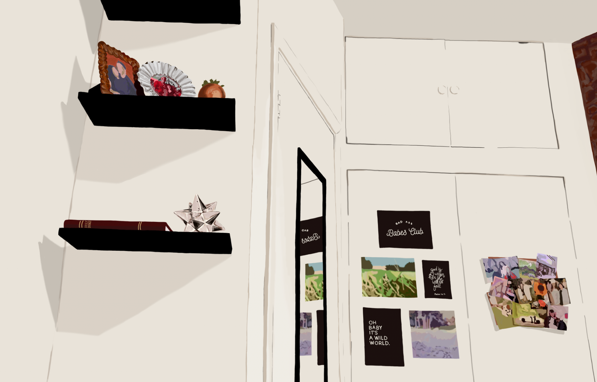

This piece was a digital painting that I did of my bedroom using both photoshop and a wacom tablet. I made this piece freshman year for my studio class. The style of the piece was inspired by Rebecca Mock who has developed a portfolio that is densely filled with digital imagery and gifs. I find her work to be fascinating, because it is very detailed and raw in terms of the scenery that she depicts, however, it looses it's raw 'feeling' through the use of a digital media. The technological and refined look of it causes the compositions to all feel 'frozen' or even meloncholic. Displayed below are various images of Rebecca Mock's works that I used as inspiration for my piece.
